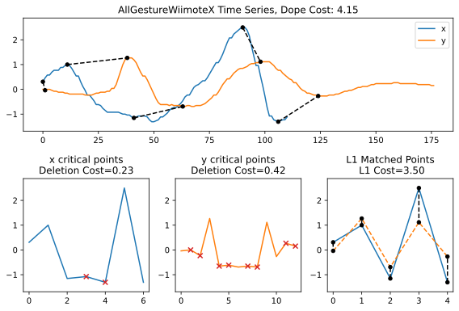
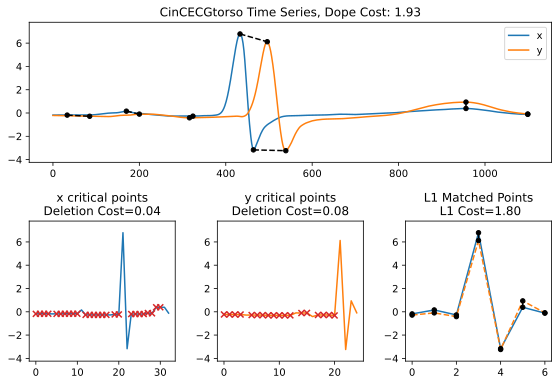
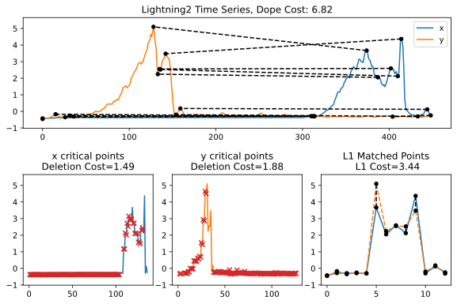
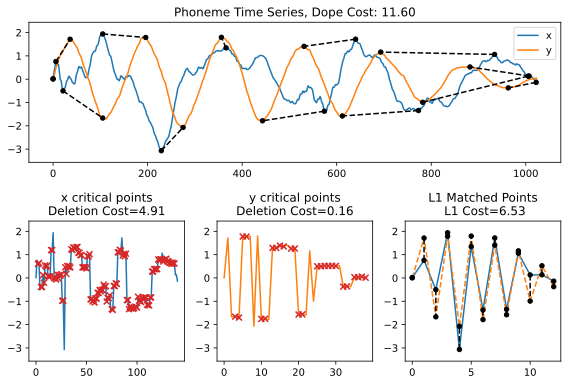
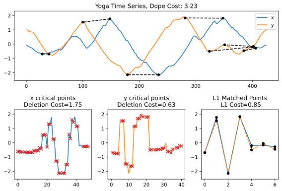

The original example we had in the paper: x coordinates of the Wii mote of two different people performing a “one left circle” motion,
Two ECG signals from one heartbeat of the same person from "computers in Cardiology challenges," an annual competition that runs with the conference series of the same name and is hosted on physionet.
Two "spectral time series" of two different lightning strikes
Audio samples from two different people saying the "EH" phoneme
The same person transitioning between yoga poses in front of a green screen. Time series is distance to the center of their outline
